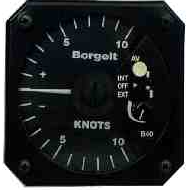
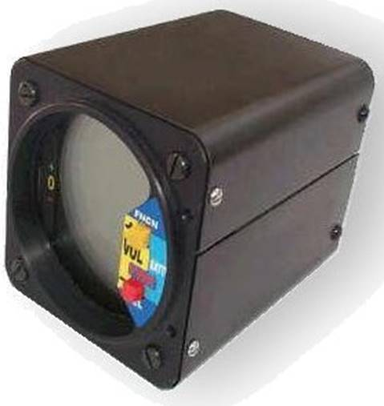
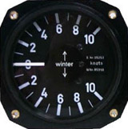

-
Contact
Soaring Tigers
Mailing address:
P.O. Box 1422
Princeton, NJ 08540Soaring Location:
Van Sant Airport
516 Cafferty Rd
Erwinna, PA 18920
Soaring Location:
Van Sant Airport
516 Cafferty Rd
Erwinna, PA 18920
Soaring Tigers Membership Manual
|
Glider License Requirements
|
Using your web browser open and carefully review all of these files to understand the operation and
control on these two electric variometers. The Tasman V1000 vario is installed in our SGS 1-26B. The
Borgelt B40 vario is installed in our SGS 1-34.
Borgelt B40 Variometer

Tasman V1000 Variometer

Winter Variometer

|
Steve Sliwa |
Dan Barry |
Brian Binnie |
In November 1975 the club purchased a Schweizer SGS 1-26D medium performance (L/D 23:1) single place sailplane and trailer for $7500. The 1-26 is by far the most popular and numerous sailplane in the United States today. The 1-26 was also completely recovered in the spring of 1978. The 1-26 trailer was modified in early 1987 to accept all of the club's aircraft.
In June 1984, Winslow Lewis donated his 1-26B and trailer to the club. This ship was enjoyed for a year but traded in October 1985 to the Aero Club Albatross for a Schweizer SGS 2-33A two-place sailplane (L/D 23:1). The addition of a second two-seater greatly expanded the club's capacity for passenger flights and demonstration rides without detriment to the instruction schedule. The 2-33 also serves as a good transition ship to the 1-26. The 2-33 acquired a new paint job through a generous donation from club member Richard Ullman in early 1987. The club also operated a Schweizer 1-34 (L/D 34:1) during 1978-1984 that was owned by Gerald O'Neil.
Soaring Tigers operated from Forrestal Airport on the Princeton University camp us from 1974 through June of 1989. During that time the club contracted for tow operations from a variety of sources including Princeton University students and faculty, and two aircraft leasing companies. The club has never owned its own tow plane, although club members with power ratings served regularly as tow pilots.
In June 1989 Princeton University closed Forrestal Airport so that the land could be used for commercial development. After thoroughly exploring alternative soaring sites and mergers with other clubs, the club then moved its operation to Van Sant airport in Erwinna, Pennsylvania in June 1989. This airport is an active soaring, flying and ballooning site, and many vintage power airplanes are based and fly there. Van Sant is located just west of the Delaware River approximately 10 miles north of New Hope, PA and across the river from Frenchtown, NJ. It is about 1 hour driving time from Princeton, NJ.
In July 1989 the club loaned its SGU 2-22E sailplane to the newly formed Penn State Glider Club. Both clubs entered into an affiliate membership agreement that enables members of both clubs to fly each other ships from their home airports. In March 1991 the 2-22E was destroyed while on loan to the Penn State club when it broke loose from its tie-downs in a severe windstorm.
In January 1996 Dan Barry, a former club member (who took his first flying lesson and got his glider private rating with the club when we were at Forrestal) flew as a mission specialist aboard the Space Shuttle STS-72. He then went on to fly two additional Space Shuttle missions.
In August 1995 the SGS 2-33 two-place glider was damaged with no injury to the pilots. In November 1996 the club replaced it with another completely rebuilt and recovered 2-33. This glider is equipped with a Borgelt electric audio variometer with averager. In November 1997 the club sold its SGS 1-26 to provide the necessary monies to ensure the continued operation and maintenance of the club's 2-place ship and flight training program.
In May 2001 the club purchased a Schweizer SGS 1-36 single place ship which experience wing damaged with no injury to the pilot in an off-field landing. In October 2001 the club purchased a Schweizer SGS 1-34 (L/D 33:1) single place sailplane and enclosed trailer. The ship is equipped with a Borgelt audio variometer with averager and a 720 channel Ditel aircraft radio. Our SGS 1-34 (L/D 33:1) is currently in storage. It was planned for return to flying status if and when we have the sufficient number of qualified glider private pilots (private or above) to fly it safely and justify the annual operating costs.
William Brian Binnie is a former Soaring Society of Princeton University (SSPU) member, United States Navy officer and is one of the test pilots for SpaceShipOne, the experimental spaceplane developed by Scaled Composites. On December 17, 2003, the 100th anniversary of the Wright brothers' first powered flight, Binnie piloted the first powered test flight of SpaceShipOne, flight 11P, which reached a top speed of Mach 1.2 and a height of 12.9 miles (20.7 km). On October 4, 2004, he piloted SpaceShipOne's second Ansari X Prize flight, flight 17P, winning the X Prize and becoming the 435th person to go into space. His flight, which peaked at 367,442 feet (69.6 mi; 112.0 km), set a winged aircraft altitude record,breaking the old record set by the North American X-15 in 1963. It also earned him the second set of Astronaut Wings to be given by the FAA for a flight aboard a privately operated commercial spacecraft.
Since inception, the Soaring Tigers has conducted about 1,000 sailplane flights in each of the years while operating from Forrestal airport. Since moving to Van Sant airport the club has conducted between 200-400 flights each year.
We now fly our Schweizer SGS 2-33A (L/D 23:1) N65867. It's a two-place sailplane that is ideal for training and giving rides. This ship was refurbished in 2011. It is equipped with a Winter variometer. The maximum combined clothed weight of the occupants for this N65867 ship is 385 lbs. This weight limit varies from one plane to another.
In July 2016 the club received a donation of a SGS 1-26B (L/D 23:1) N389BR single-place sailplane and a glider trailer from a club member. It is equipped with both a mechanical Winter variometer and a Tasman V1000 electric audio variometer. The minimum clothed weight of the pilot in this N386BR ship is 158 lbs. (with optional ballast) and a maximum clothed weight of the pilot is 191 lbs. This weight limit varies from one plane to another.
Our SGS 1-34 (L/D 33:1) started flying again in July 2016. We are flying it again since we now have a sufficient number of qualified glider pilots (private or above) to fly it safely and justify the annual operating costs. It is equipped with a radio plus both a Winter mechanical variometer and a Borgelt B40 electric audio variometer. The minimum clothed weight of the pilot in this N76JP ship is 140 lbs. (with optional ballast) and a maximum clothed weight of the pilot is 212 lbs. This weight limit varies from one plane to another.